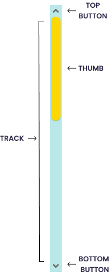

Scrollbars Personalizadas.
Un simple script y unos cuantos estilos es lo que nos encontramos al introducir estos archivos a su proyecto. Con simples lineas de codigo, tenemos nuestro propias scrollbar customizada.
Doc

Un simple script y unos cuantos estilos es lo que nos encontramos al introducir estos archivos a su proyecto. Con simples lineas de codigo, tenemos nuestro propias scrollbar customizada.
DocTodos los atributos serán puesto en una simple linea de codigo, especificamente en la etiqueta <body>
Estos 3 serán las clases de medidas del ancho para la scrollbar, cada uno varia el 'width' en pixeles con el numero de la clase respectiva.
<body class="w-15"></body>
<body class="w-10"></body>
<body class="w-7"></body>
El Scrollbar no tiene bordes redondeados por defecto, entonces tambien se le podra agregar la clase 'radius' para resolver este problema.
<body class="radius"></body>
Al igual que las demás propiedades, estan se introduciran en la etiqueta <body>
-> Atributo thumb
<body thumb=""></body>
Dentro del atributo se introduce un color o codigo hexadecimal
-> Atributo track
<body track=""></body>
Dentro del atributo se introduce un color o codigo hexadecimal
Además de esto, contamos con un degradado para el scroll, acompañando en las clases.
<body class="degraded"></body>